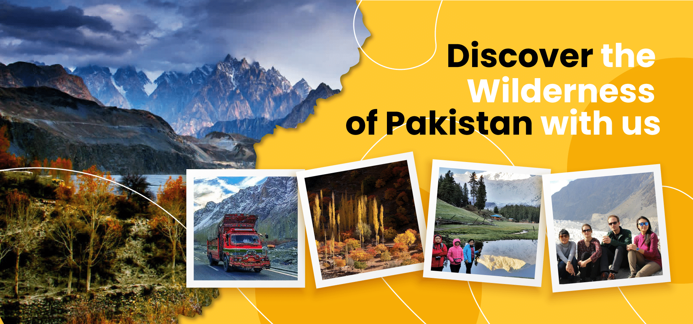
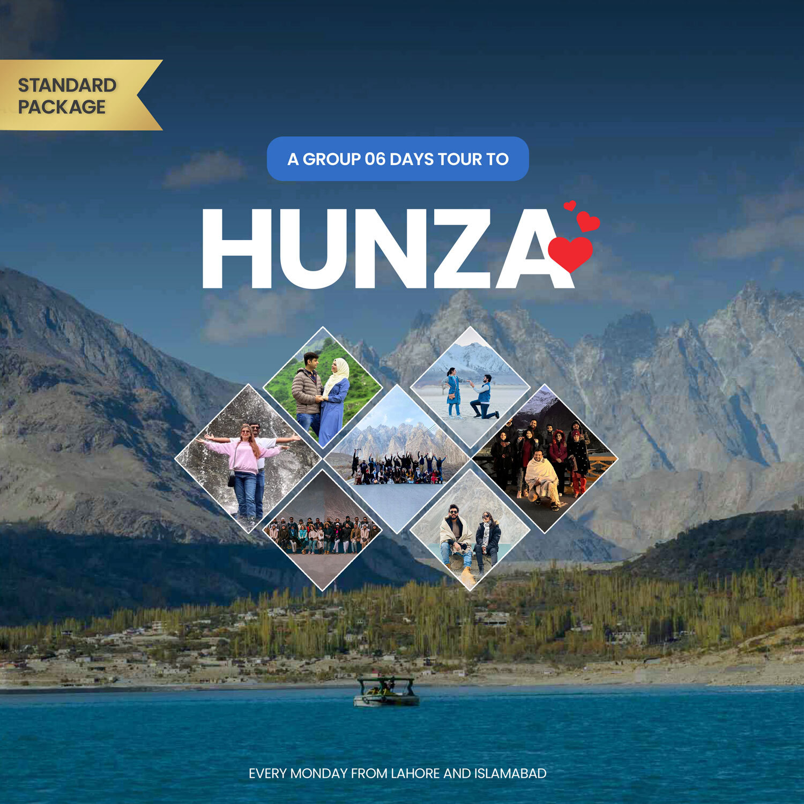
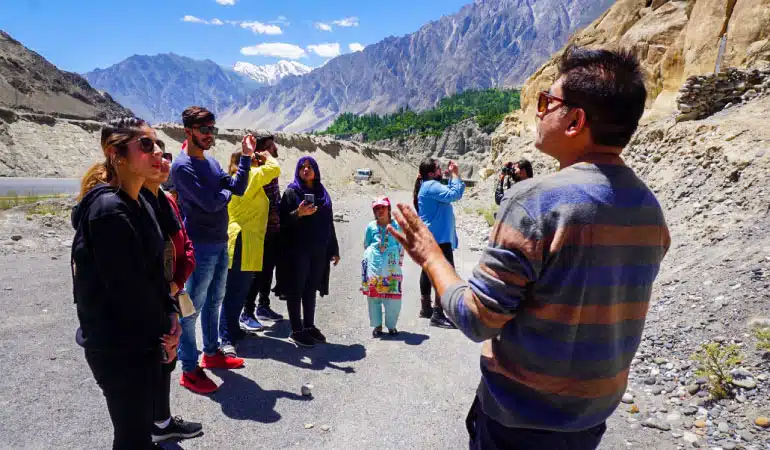
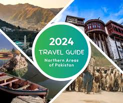
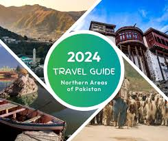
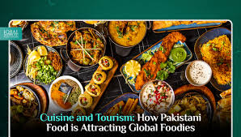
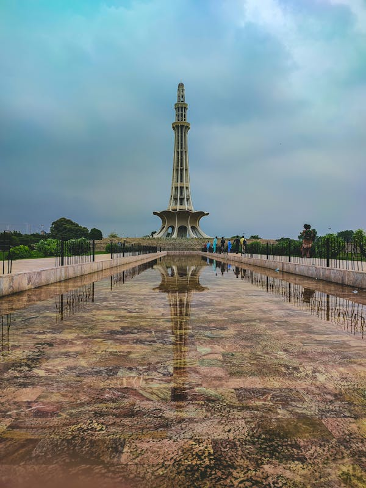
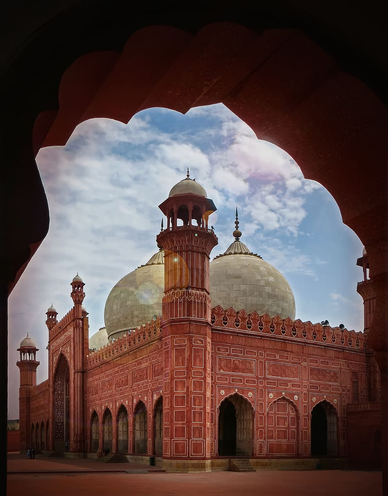
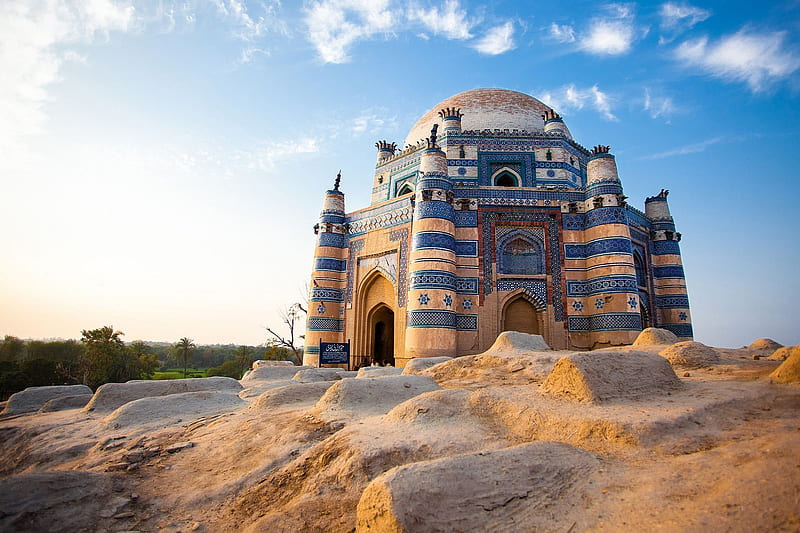

Tour Packages
Tour packages are like super cool adventure bundles! Imagine planning a vacation, but instead of worrying about flights, hotels, and activities, someone else does it all for you. That's a tour package! You pick where you want to go, and the tour company takes care of everything. They book your flights, find you a comfy place to stay, and plan exciting things to do. It's like having a personal travel planner! Plus, tour packages often cost less than booking everything separately. So, you get to save money and have an awesome time!

Accommodation booking
Planning a trip to Pakistan? Awesome! Part of the fun is finding the perfect place to stay. You've got lots of options! If you're booking a tour, the tour company usually takes care of your hotels. That's super convenient, especially if you're visiting lots of different places. But if you prefer to book on your own, you can choose from fancy hotels, cozy guesthouses, or even camping under the stars! There are websites and apps that help you find and book places to stay. Just make sure to read reviews and check the location before you book. Happy exploring Pakistan!
Transportation services
Pakistan has many ways to explore its amazing places! If you're joining a tour, your transportation is usually taken care of. You might ride in comfy buses, cool jeeps, or even helicopters for epic mountain views! If you're on your own adventure, there are lots of options. You can fly to big cities, then take trains or buses to other places. For exploring cities, you can use taxis, rickshaws, or ride-sharing apps. And if you really want freedom, rent a car or motorbike! Just remember to follow traffic rules and stay safe. No matter how you choose to travel, Pakistan's got you covered!

Guide services

Imagine exploring a new place without knowing where to go or what to see. That's where guides come in! They're like super knowledgeable friends who show you the coolest spots. In Pakistan, there are guides for every kind of adventure. Some know all about ancient ruins, others are experts on mountains, and some are pros at finding the best food! They can help you understand the culture, talk to locals, and even take amazing photos. So, if you want to make the most of your trip, consider hiring a guide. They'll make your adventure even more fun and unforgettable!
.jfif) 

Food and beverage services
Pakistan is a foodie's paradise! Your taste buds are in for a real treat. From spicy curries to sweet treats, there's something for everyone. Tour Packages: Many tour packages include meals. This is super convenient, especially if you're not sure where to eat. You'll get to try a variety of dishes, and you won't have to worry about finding a restaurant. Street Food: Pakistan is famous for its delicious street food. From crispy samosas to juicy kebabs, there's so much to explore. Don't be afraid to try something new! Restaurants: There are all kinds of restaurants in Pakistan, from fancy places to casual eateries. You can find everything from traditional Pakistani food to international cuisine. Drinks: You can find water, soda, and juice everywhere. If you prefer tea or coffee, you're in luck! Pakistanis love their tea, and you can find it in every shop and restaurant. Important Tip: Be careful about what you eat and drink, especially if you're not used to the local food. It's always a good idea to drink bottled water. So, get ready for a culinary adventure!

Travel insurance
You're on the coolest adventure in Pakistan, exploring amazing places and making unforgettable memories. But suddenly, something unexpected happens – maybe you get sick, or your luggage gets lost. That's where travel insurance comes in! It's like having a superhero sidekick on your trip. Travel insurance is a safety net that protects you from unexpected problems. It can cover things like medical expenses if you get sick or hurt, lost luggage, trip cancellations, and even emergency travel. When you're booking a tour in Pakistan, it's a good idea to check if the tour company includes travel insurance. If not, you can buy it separately. Comparing different insurance plans is important to find the one that fits your needs and budget. Remember, travel insurance gives you peace of mind, so you can focus on enjoying your adventure without worrying too much about the unexpected.
Language interpretation
Don't worry about language barriers when visiting Pakistan! English is widely spoken, especially in tourist areas and big cities. So, you can easily chat with people and ask for directions. If you're going to smaller towns or villages, some locals might speak Urdu or other regional languages. But don't stress! Many people know basic English. Plus, there are always ways to communicate with gestures and smiles. Most tour guides speak English really well, so you can ask them anything. It's a great way to learn about the country and its culture. So, relax and enjoy your adventure in Pakistan!

Sightseeing tours
Pakistan is full of incredible places to explore! Sightseeing tours are a fantastic way to see the best of the country. You can visit ancient ruins, towering mountains, beautiful beaches, and bustling cities. Imagine exploring the old city of Lahore with its grand forts and colorful bazaars. Or how about trekking through the stunning landscapes of the Northern Areas? You can even relax on the sandy beaches of Karachi! Sightseeing tours are perfect for families, friends, or solo adventurers. There's something for everyone!
Cultural Tours
Pakistan is a treasure trove of rich cultures, traditions, and history. A cultural tour of Pakistan is like opening a colorful book filled with amazing stories. Imagine exploring ancient cities, meeting friendly people, and experiencing exciting festivals! A Tapestry of Cultures Pakistan is home to people from different backgrounds, each with their own unique customs and traditions. You'll find people speaking different languages, wearing colorful clothes, and enjoying delicious local food. It's like visiting many different countries in one! Historical Gems Pakistan is filled with historical sites that will take you back in time. You can explore the grand forts and palaces of Lahore, the ancient ruins of Taxila, and the stunning mosques of Thatta. Imagine walking through the same places as famous historical figures! Vibrant Festivals Pakistan comes alive during its festivals! You can experience the energy and excitement of events like Basant, Eid, and Diwali. These festivals are filled with music, dance, food, and fireworks. It's a fantastic way to immerse yourself in Pakistani culture. Warm Hospitality One of the best things about visiting Pakistan is the warm welcome you'll receive. People are known for their hospitality and love to share their culture with visitors. You'll feel right at home! Shopping Spree Pakistan is a shopper's paradise! You can find everything from colorful textiles to handmade crafts. Be sure to visit the local bazaars to find unique souvenirs to take home. A cultural tour of Pakistan is an unforgettable experience. You'll create memories that will last a lifetime. So, pack your bags and get ready for an amazing adventure!

Historical Tours
Pakistan is like an open book filled with amazing stories from the past. Imagine walking through the same places where kings and queens once lived! That's what a historical tour in Pakistan is like. Lahore: A City of Kings Lahore is like a giant history book. You can visit the Badshahi Mosque, a huge, beautiful place where thousands of people pray. Or you can explore the Lahore Fort, a strong old building with lots of secrets. Don't forget to see the Wagah Border ceremony – it's super exciting! Taxila: The Ancient School Taxila is like an old school where people learned about life a long time ago. It's full of ruins from old buildings and temples. You can imagine what it was like to live there thousands of years ago. Mohenjo-daro: A Lost City Mohenjo-daro is a mystery! It's an old city that was covered by sand for a long time. Scientists aren't sure how people lived there, but you can see the cool things they left behind. Karachi: A Mix of Old and New Karachi is a busy city, but it also has a rich history. You can visit old buildings, learn about the city's past, and see how it's changed over time. Other Cool Places There are so many other places to explore in Pakistan! You can see ancient Buddhist ruins, visit hill forts, and learn about different cultures. A historical tour is like a time machine. It lets you travel back to the past and learn about the people who lived before us. It's a fun and exciting way to learn!

